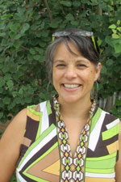

Master of Arts
Second Language Education
Nationally and internationally known for a range of programs which focus on English as a second language (ESL) for K-12, postsecondary, and adult classrooms; bilingual and immersion education; and traditional foreign language education in both K-12 and postsecondary settings.
Our perspective on language learning and teaching is markedly pedagogical and informed by an awareness of the role social context plays in the process of language learning and teaching. Masters students in the SLC track engage in coursework and projects that balance theory and research with practical application.
Priority deadline: December 1
Admissions decisions: January

Faculty advisers
Professor
Kendall King
Second language learning | Bilingualism | Transmigratory experiences of children | Immigrant education | Language ideology | Language policy. Full profile

Associate Professor
Mary (Fong) Hermes
Indigenous language revitalization | Multimedia technology and language learning. Full profile
Professor
Martha Bigelow
Second language acquisition | Schooling experiences of adolescent immigrant youth | Preservice teacher education | Multicultural education. Full profile
Associate Professor
Diane (Dee) Tedick
Dual language + immersion education | Content-based language instruction | Language teacher education and development | Foreign language education. Full profile
Choose your plan
Thesis
Plan A
- 10 thesis credits
- approximately 450 hours of work
- involves original research in the form of a "mini-dissertation" divided into chapters
- is likely to require human subjects (IRB) approval
- final copy is bound and submitted to the Graduate School
- often pursued by studens who inted to pursue a Ph.D.*
*Completing a thesis does not guarantee admission to a Ph.D program, though, if accepted, the thesis can serve as the basis of your dissertation.
Curriculum
- CI 8133—Research Methods in Curriculum and Instruction (3 cr.)
- CI 5651—Foundations in Second Languages and Cultures Education (3 cr.)
- CI 5662—Second Language Curriculum Design (3 cr.)
- CI 5658—Foreign Language Testing and Assessment (3 cr.)
- CI 5647—Teaching middle/secondary immigrant ELLs with limited formal schooling (3 cr.) - required for those focusing on ESL
- Choose one additional research methodology course: either quantitative (e.g., EPSY 5261—Introduction to Statistics (3 cr.) or a qualitative course selected in consultation with adviser.
At least one of the two following:
- CI 5656—Teaching Literacy in Second Language Classrooms (3 cr.)
- CI 5657—Teaching Speaking and Listening in Second Language Classrooms (3 cr.)
Major: (minimum of 15 cr.)
Minor or related field: (6 cr.)
Thesis credits: CI 8777 (10 cr.)
Total: 34 credits
Final Paper
Plan B
- 3 credit "Problems" course
- approximately 120 hours of work
- results in 1 paper, 40-60 pages in length, divided into sections. Or 2 papers, each 20-30 pages
- may or many not involve human subjects (IRB) approval
- final copy is not submitted to the graduate school
- often pursued by students who aren't committed to pursuing a Ph.D.*
*It is possible to complete a final paper and later pursue your Ph.D. You will apply with less research experience, but will still be considered for admission based on teh strength of your application.
Curriculum
- CI 5651—Foundations in Second Languages and Cultures Education
- CI 5656—Teaching Literacy in Second Language Classrooms (3 cr.)
- CI 5657—Teaching Speaking and Listening in Second Language Classrooms (3 cr.)
- CI 5658—Foreign Language Testing and Assessment (3 cr.) or CI 5642—Assessing English Learners (3 cr.)
- CI 5662—Second Language Curriculum Design
- CI 5647—Teaching Middle/Secondary Immigrant ELLs with Limited Formal Schooling (3 cr.) – required for those focusing on ESL
Research:
- At least one course in research methods, selected with adviser from list of recommended courses for C&I Plan B students.
- DES 8181—Research Ethics (1 cr.) or Responsible Conduct of Research (RCR) part 1 & 2 workshops
- CI 8695—Problems: Second Languages and Cultures Education [3 cr. for Plan B paper(s)]
Minor or related field: (6 cr.)
Total: 30 credits
Opportunities
Funding
Support is available in the form of:
- Teaching Assistantships. The majority work as student teaching supervisors for M.Ed. initial licensure students. Daytime availability, a teaching license, and teaching experience are required
- Research Assistantships
- Fellowships. Based on a departmental nomination process. You will be notified by the Director of Graduate Studies if you are being considered for a fellowship
A typical tull benefits assistantship (tuition, health insurance + stipend) 20 hours/week at approximately $18/hour. Benefits are pro-rated based on the appointment percentage. Learn more: Graduate Assistant Office.
Have a complete application in by December 1 to be considered for these positions for the following academic year.
While support is not guaranteed, we make every attempt to financially support full-time students through completion. You may also explore assistantships available outside our department on the University's employment page.
Strong applicants demonstrate:
Admission criteria
- Evidence of interest in research and in the development of research competencies
- Evidence of substancial experience in the discipline
- Strong writing skills
- Bachelor's degree from an accredited U.S. institution or foreign equivalent; 3.00 GPA preferred
If you are a returning Graduate School student, follow the Readmission guidelines.
If you are a current Graduate School student and need to change your program, follow the Change of Status guidelines.
Prepare to apply
All applicants
To apply you will need:
Unofficial transcripts. Upload your transcripts into the application system; please do not mail your transcripts. Official transcripts are required only after you are admitted. Tips for uploading your transcript(s). Transfer credits must be evaluated and approved by a faculty adviser.
GRE scores. Only the general test is required. University of Minnesota code: 6874. Average GRE scores of admitted students.
Resume. Upload in the Program Supplementary Information - Graduate Program Additional Application section.
CI Application Form. Upload in the Program Supplementary Information section.
Personal statement. Upload in the Program Supplementary Information section. Please trace how you became interested in research in this discipline, as well as what problems interest you the most and why. Be sure to speak to:
- why you want to study in our department
- what strengths, expertise, and research experience would contribute to your success in our program
- your professional goals for pursuing a research-focused degree
Diversity statement. Identify the distinctive qualities, characteristics, and life experiences you would contribute to your graduate program and to the education of fellow students at the University of Minnesota. You may wish to include examples that address your contribution to the diversity of the student body and illustrate your motivation to succeed by setting high standards for accomplishing intellectual and other goals, overcoming obstacles to achievement, and/or helping others to gain access to the resources necessary for success. (please do not exceed one page in length)
3 letters of recommendation. Upload in the Department\Program Forms section.
Short writing sample (optional). For example, an excerpt from a term paper or research paper for publication.
Prepare to apply
International applicants
International applicants may also need:
- An English translation of your transcripts, if the transcript is not in English. A course by course evaluation may be required.
- TOEFL/IELTS or MELAB. You may qualify for an exception if you have completed 16 semester or 24 quarter credits within the past 24 months in residence as a full-time student at an accredited institution of higher learning in the United States.
Credit for past work
Transfer credits
You must complete at least 60% of your coursework (not including thesis credits) within our program. Thesis credits cannot be transferred.
You can transfer a maximum of 12 graduate course credits taken as non-degree seeking or non-admitted status at the University of Minnesota.
After you are admitted, you will work with your adviser to determine which credits may transfer.
Earn your Master of Arts:
Graduate Studies Coordinator
Kristina Pearon
cigs@umn.edu
fax: (612) 624.8277
office: 125H Peik Hall